1.1 Implantación de aplicaciones web en contenedores
El protocolo http, o su extensión https, ha ido convirtiéndose poco a poco en el “superprotocolo” de Internet y ha ido desplazando paulatinamente el uso de otros protocolos.
De igual forma, la mayor parte del software que se consume hoy en día se podría denominar de forma genérica como aplicación web, aunque hay diferencias importantes sobre la forma de presentarse, ya que no es lo mismo que una persona acceda a una aplicación a través de un navegador, a través de una aplicación móvil o que quien acceda a la aplicación sea una máquina.
En este curso no podemos entrar en detalle sobre las características de estas aplicaciones web, pero sí en las características que deben tener los sistemas que las ofrecen para que cumplan con los requisitos esperados.
Requisitos habituales de las aplicaciones web
Pensemos inicialmente en el caso de una aplicación interna de una empresa que está instalada localmente y que los únicos usuarios que tiene son la plantilla de empleados de la empresa. En ese caso, es fácil determinar los recursos necesarios para que la aplicación funcione de forma adecuada, porque ni el uso de la aplicación se dispara en unos instantes, ni el número de empleados de una empresa varía de forma abrupta.
Por otra parte, las actualizaciones se pueden hacer en momentos en los que el uso es mínimo y, si es necesario una interrupción del servicio, se puede programar para un momento determinado en que tenga muy poco impacto. Las aplicaciones de este tipo no se suelen modificar habitualmente, sino que lo hacen de forma bastante espaciada en el tiempo, por lo que los cambios entre una versión y otra son significativos. Esto, que podríamos llamar informática tradicional, también tiene un impacto importante en la forma de desarrollar las aplicaciones que funcionan bajo este esquema.
Por otra parte, una aplicación web que esté disponible en Internet, tiene miles de millones de potenciales usuarios, que la pueden usar las 24 horas del día y cualquier día del año. Esto tiene unas consecuencias muy importantes, ya que es muy difícil determinar los recursos necesarios para prestar servicios a una demanda muy variable e idealmente, el servicio no puede interrumpirse nunca.
Pero, ¿esto cómo se hace?. ¿Es posible que el mismo sistema se ajuste a una demanda que puede variar de un usuario a un millón?, ¿es posible tener un sistema siempre actualizado y que a la vez no se pare?, ¿cómo se aplican las actualizaciones de software?, ¿poco a poco o con grandes saltos?. Durante este curso, veremos que precisamente esto es lo que trata de proporcionar Kubernetes.
Componentes auxiliares de un servicio web
El componente esencial para servir una aplicación web es un servidor web, pero vamos a ver a continuación, que para poder proporcionar el servicio con los requisitos anteriores, debe apoyarse en un número importante de componentes auxiliares. En los siguientes apartados vamos a ir viendo paso a paso la forma de ir incluyendo diferentes componentes auxiliares y cómo esta inclusión va a ir cambiando la arquitectura de los sistemas que proporcionan el servicio.
Paso 1. Punto de partida
Supongamos que nuestra organización proporciona tres aplicaciones web diferentes que son accesibles a través de las URL:
Estas aplicaciones pueden estar desarrolladas en el mismo lenguaje o en varios diferentes (Python, Java, PHP, etc.), pueden utilizar una base de datos, almacenamiento auxiliar y como se sirven a través de https, es necesario gestionar los certificados x509.
El esquema inicial que pensaríamos para proporcionar estas tres aplicaciones sería una máquina (física o virtual) en la que instalaríamos el servidor web, los servidores de aplicaciones (php, java, …), el servidor de bases de datos, etc… tal y como aparece en la siguiente imagen:
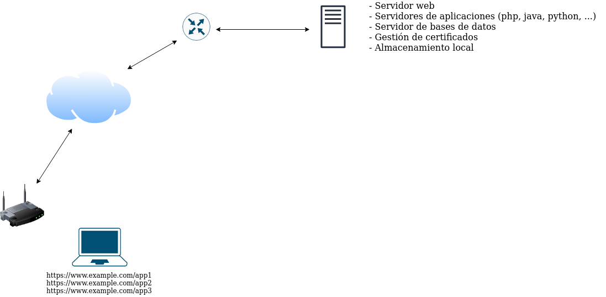
Paso 2. Servidor de bases de datos separado
Desde un punto de vista de seguridad, ubicar el servidor de bases de datos en el mismo equipo que el servidor web es totalmente inadecuado, ya que el servidor web, por su propia naturaleza debe permitir que cualquier usuario acceda desde Internet y una vulnerabilidad en este equipo podría exponer los datos que se ubican en las bases de datos a un potencial atacante. Además, desde el punto de vista del rendimiento y la disponibilidad, separar los servicios en diferentes equipos hace que no haya interacciones entre ellos y no compitan por los mismos recursos.
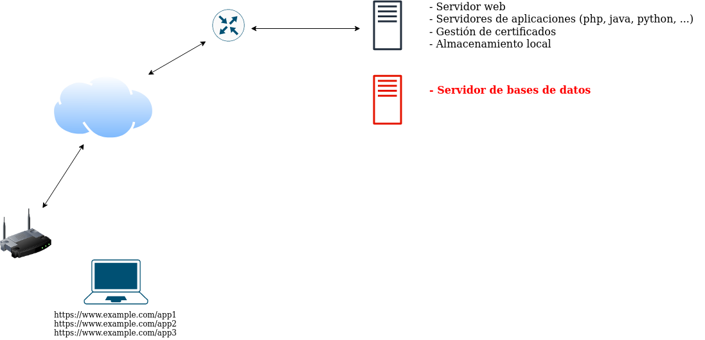
Paso 3. Servidores de aplicaciones en equipos separados
El coste computacional mayor en una aplicación web suele recaer en los servidores de aplicaciones, que son los que ejecutan código complejo, mientras que el servidor web se limita a servir el contenido generado por estos servidores de aplicaciones o los ficheros estáticos del sitio web. Al servir tres aplicaciones web diferentes desde el mismo equipo, podemos tener importantes interacciones entre ellas y que un aumento de uso de una aplicación, repercuta negativamente en las otras. Es por esto, por lo que se puede separar estos servidores de aplicación en equipos dedicados para cada una de ellas. La función del servidor web en este caso, se acerca más a la de un proxy inverso, que pasa la petición web a un equipo interno (el servidor de aplicaciones).
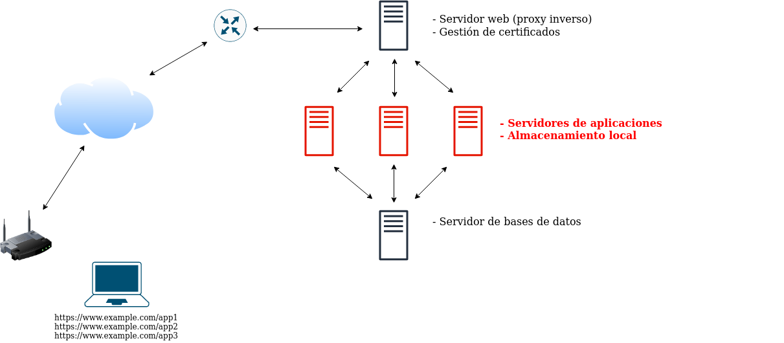
Paso 4. Caché SQL
Los servidores de aplicaciones consultan continuamente a los servidores de bases de datos y cada consulta conlleva un importante coste computacional y una ralentización de la respuesta. Si la misma consulta ya se ha realizado antes, se puede acelerar mucho la velocidad de respuesta con menor coste computacional utilizando un servicio de caché SQL, de manera que los servidores de aplicaciones se configuran para consultar al servidor caché, que servirá directamente la respuesta si ya lo ha hecho anteriormente, o consultará al servidor de bases de datos en caso necesario. Memcached o redis son dos opciones muy utilizadas como caché SQL.
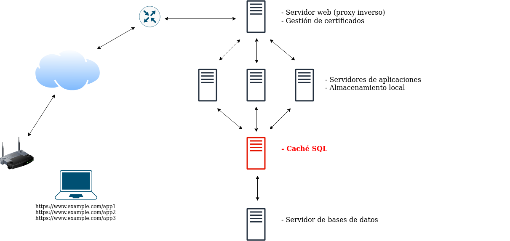
Paso 5. Caché HTTP
Al igual que se puede cachear la respuesta del servidor de bases de datos, se puede hacer lo mismo con la del servidor de aplicaciones o el servidor web. Dependiendo del servidor de aplicaciones, se puede ubicar este componente delante del servidor web o entre éste y el servidor de aplicaciones. Dicho de otro modo, podemos cachear http o algún otro protocolo como CGI, WSGI, etc. Un software muy conocido de caché http es varnish.
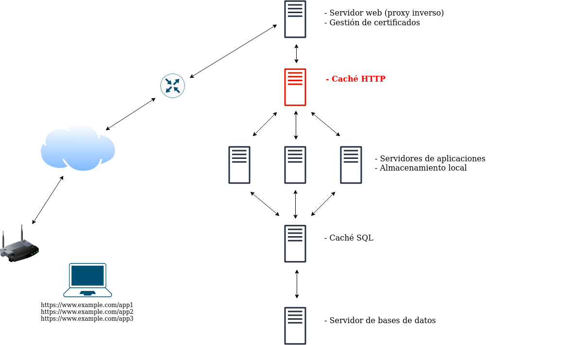
Paso 6. Varios servidores de aplicaciones
Si la demanda de alguna de las aplicaciones varía de forma importante, se puede utilizar escalado horizontal, aumentando el número de nodos de estos servidores de aplicaciones a la demanda de cada momento. Esto conlleva dos importantes modificaciones, el almacenamiento entre los servidores de aplicación de la misma aplicación tiene que estar distribuido de forma que garantice el uso concurrente y se deben repartir las peticiones a los diferentes servidores de aplicación a través de un balanceador de carga.
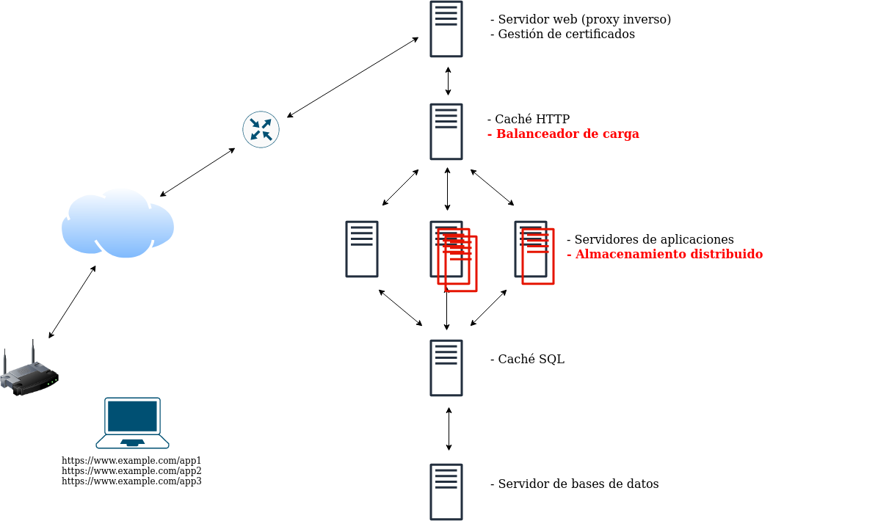
Paso 7. Alta disponibilidad en el resto de componentes
No solo se pueden escalar horizontalmente los servidores de aplicaciones, sino que si queremos ofrecer realmente alta disponibilidad en todos los niveles, debemos crear una arquitectura en la que la disponibilidad nunca dependa de uno solo nodo y el sistema pueda responder siempre ante incidencias puntuales en cualquier nivel.
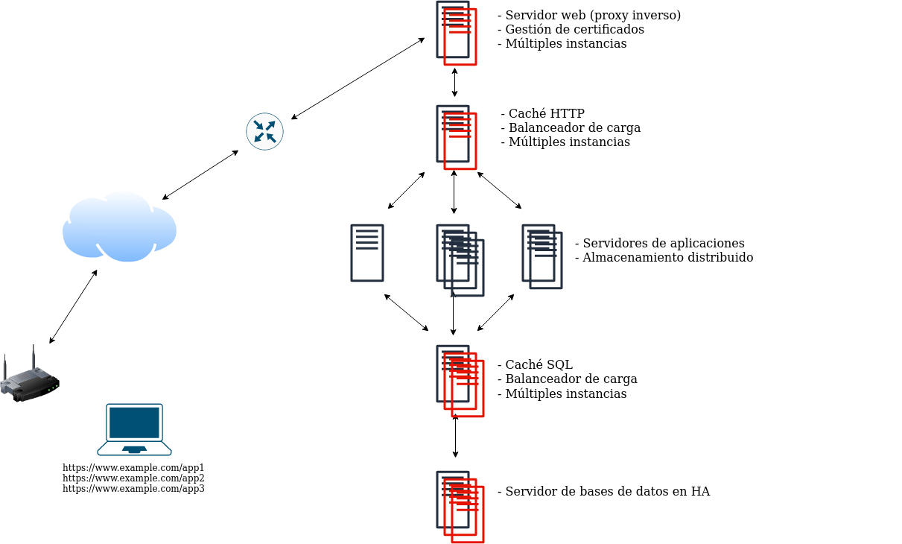
Paso 8. Microservicios y aplicaciones “tradicionales”
Una de las opciones que se considera más adecuada hoy en día para el desarrollo y puesta en producción de aplicaciones web es la utilización de microservicios. Con este enfoque los propios componentes de la aplicación se separan en múltiples componentes que se ejecutan en nodos independientes (típicamente contenedores) y se comunican unos con otros a través de servicios en red que ofrecen al resto.
Estos microservicios no solo incluirían de forma independiente los componentes que hemos explicado hasta ahora, sino que principalmente se refiere a la separación de los componentes internos de la aplicación en diferentes microservicios.
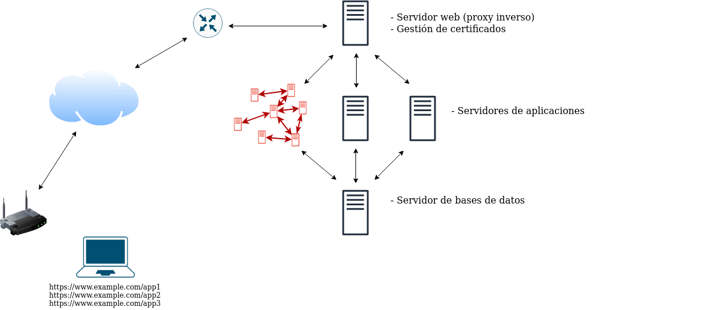
Paso 9. Escalabilidad en los microservicios
Al ofrecer microservicios no podemos tener dependencia de un solo nodo, por lo que al igual que en los pasos anteriores, se debe ofrecer la posibilidad de escalar cualquier componente a la demanda y que el sistema globalmente pueda responder ante cualquier error puntual.
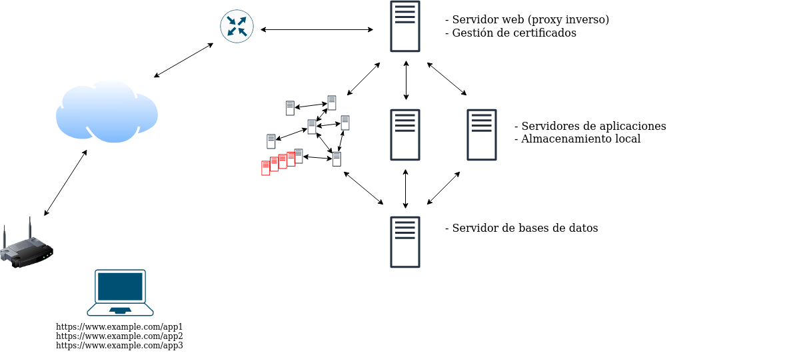
Paso 10. Microservicios en todas las aplicaciones
En lugar de utilizar microservicios en una aplicación, podríamos utilizarlos en todas, pero manteniendo los componentes auxiliares gestionados aparte.
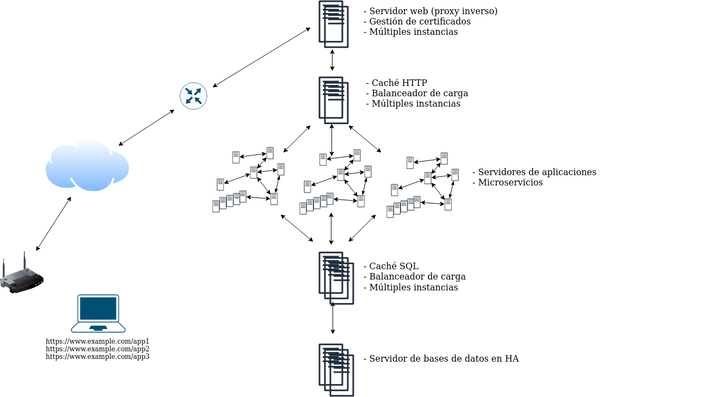
Paso 11. Todo en microservicios
O podríamos tener todo definido internamente en microservicios, tanto los componentes de cada aplicación, como los componentes auxiliares.
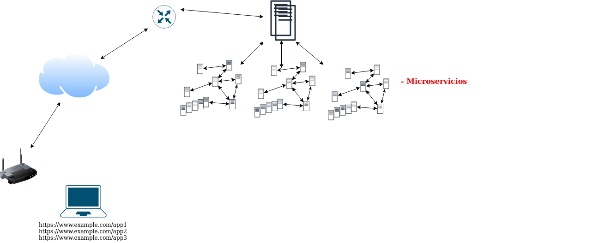
Contenedores
En parte por lo que hemos explicado aquí, y en parte por las ventajas que proporciona en el desarrollo de software y en el rápido despliegue, muchos de los componentes que hemos presentado se ejecutan no sobre máquinas virtuales o físicas, sino que lo hacen sobre contenedores de aplicaciones tipo docker (hoy en día se plantean otras alternativas como podman o containerd, pero no vamos a entrar en esa explicación). Docker es capaz de gestionar esos contenedores de forma ágil y rápida, pero no tiene funcionalidad para ejecutar escenarios tan complejos como los anteriores, que además se ejecutarían lógicamente en diferentes nodos físicos o virtuales (que a su vez ejecutarían docker para los componentes de la aplicación).
Conclusión
Esto no son más que un conjunto de componentes y una explicación muy rápida de ellos, el orden y la ubicación de ellos es variable en función del caso de uso, pero en cualquier caso queríamos presentarlos aquí para tener una visión global de hacia dónde vamos. Algo que claramente podemos ver es que la gestión de este tipo de aplicaciones se convierte pronto en algo muy complejo, por lo que necesitamos apoyarnos en algún software que controle y gestione de forma adecuada estos sistemas tan complejos.